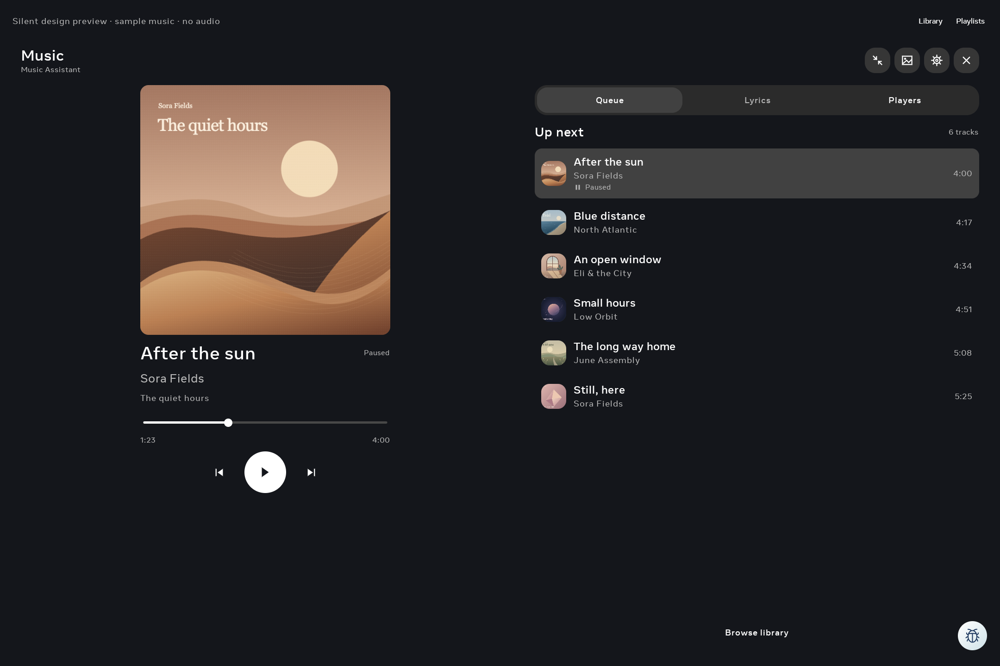

Native components captured on the actual Portal: Android 10, 2160 × 1440, 180 dpi. Silent sample tracks and original artwork. The preview header and debug badge are test controls; Home supplies the app’s normal header and dock. Audio-provider setup and real playback are deferred.
Interactive design · Earlier emulator captures · Physical check results
